Project Management - Prepare
我们将使用以下工具来构建我们的网页:
注意:仓库是原先已经建好的,下面是操作示范。
创建一个公开仓库,您可以与团队成员协作创建网页内容。
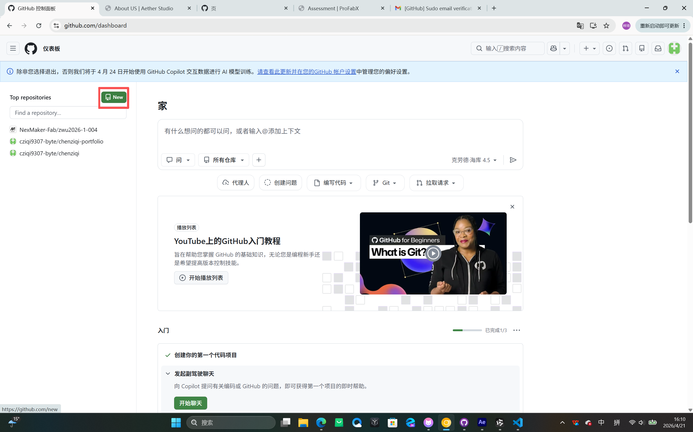
将页面设置为空。点击仓库的设置,在左侧选择"Pages"。选择"main"分支和"/root"目录并保存。上方的链接允许您查看页面。
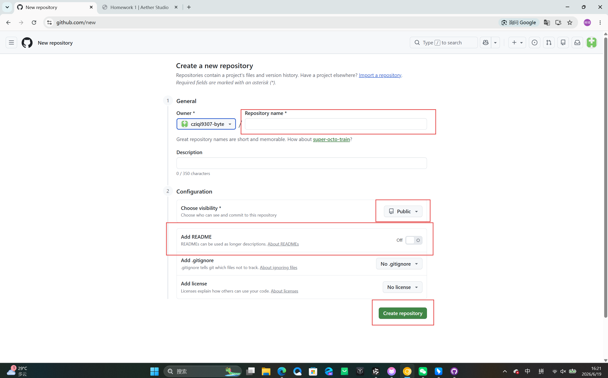
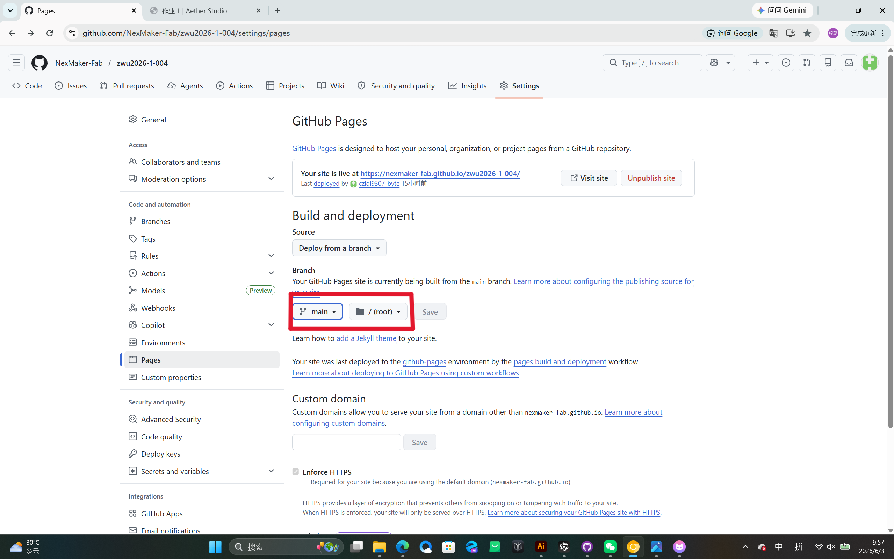
点击"Settings",在左侧找到"Collaborators",然后点击"Add people",输入他们的邮箱地址,并设置他们的角色(maintainer)。
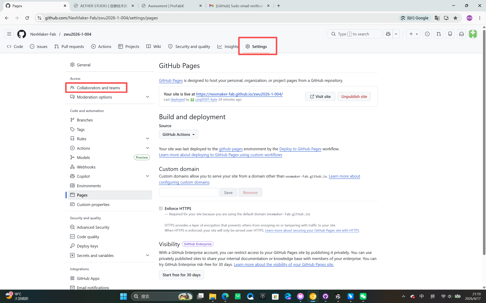
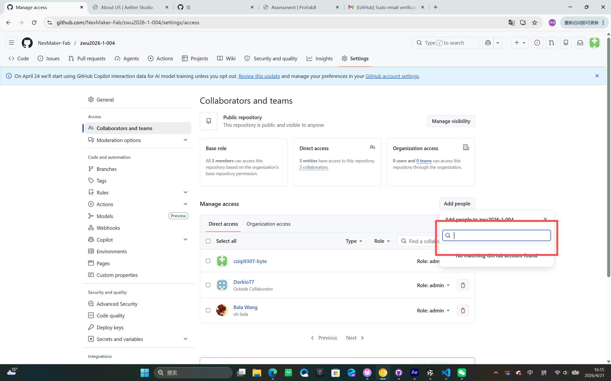
打开软件并登录您的 GitHub 账户。
克隆仓库并选择一个位置保存到您的计算机。
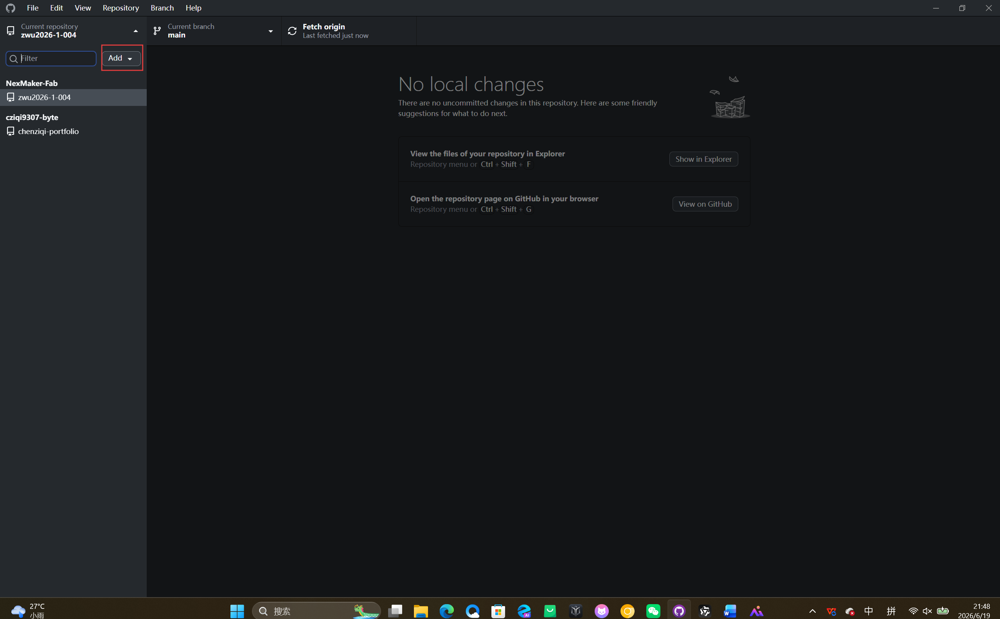
提示词:请为我生成一个创意团队"Aether Studio"的品牌官网,HTML/CSS/JS全在一个文件中。整体风格参考圣罗兰官网:深色背景(#000000或#0A0A0A)、大面积留白、无衬线大标题、极简导航、细腻的滚动动画和悬停效果。品牌调性要体现"空灵、科技、艺术",主色调为黑、白、银,点缀色使用淡紫色(#B8A9FF)或金属银。风格大气高端,搭建完成后部署到github 的github action,调整相关配置,在Hero 区(全屏)的背景添加动态视频文件地址为"C\Users\陈梓琦\Downloads\26effea5eebe759563d88b21ca812014_raw.mp4",添加小组成员介绍,分别是陈梓琦,王琦琦,李琳,章悦,朱诗瑶,何昱璇,徐思瑜,内容包含主页,团队介绍,平时作业,最终项目,主页需要一个视频背景,左上角放置logo,标签页的logo需要在深色模式下为白色,团队介绍内有七位成员的介绍卡片,卡片点进去链接到每位成员的个人网页,平时作业有九项,点进去后可展示作业内容包含文字图片有返回键,Markdown格式
通义灵码是一款AI编程助手,帮助我们高效地编写代码和文档。它可以生成代码片段、解释复杂概念并协助调试,使网站开发过程更快、更高效。
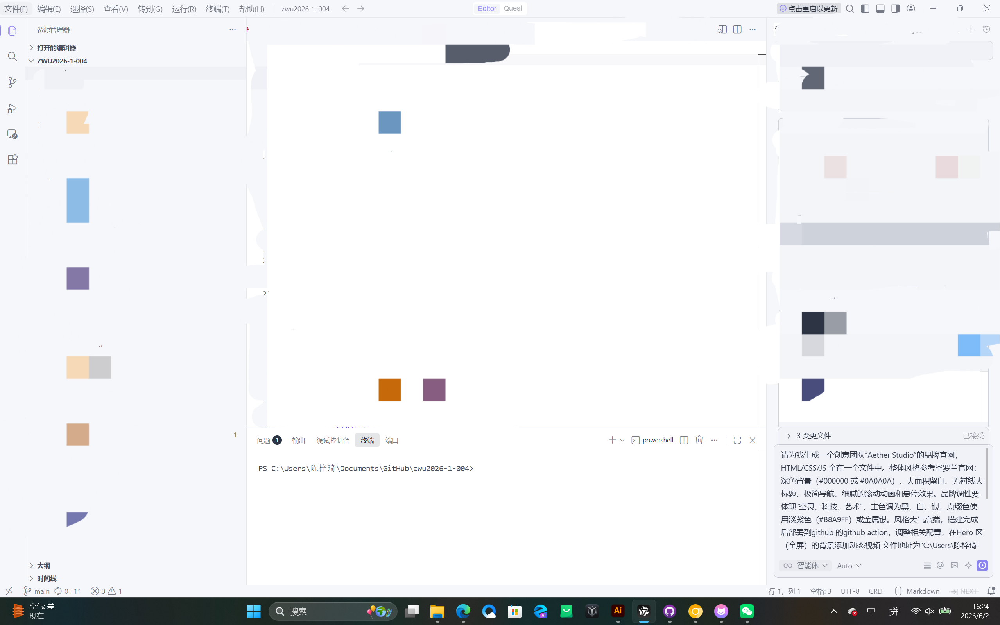
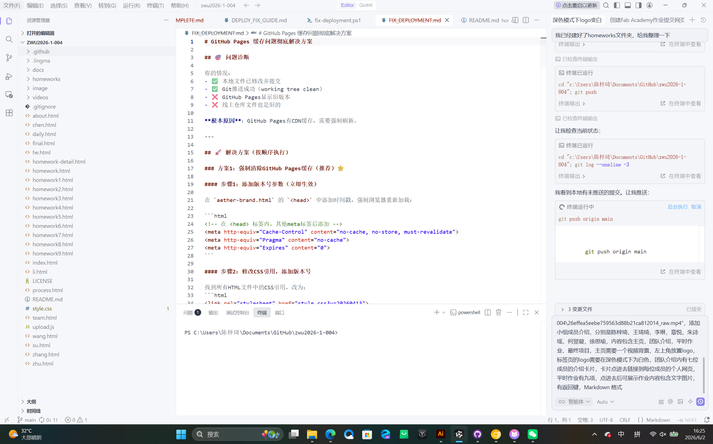
提示词:在首页上方建立导航栏分别通往四个页面 Home ,About US,Daily homework,Finalwork
在首页顶部创建导航栏,提供到四个主要部分的链接:Home(主页)、About Us(团队介绍)、Daily Homework(平时作业)和 Final Work(最终项目)。这使用户能够轻松地在网站的不同部分之间导航。
修改文件后,在左侧编写提交说明。
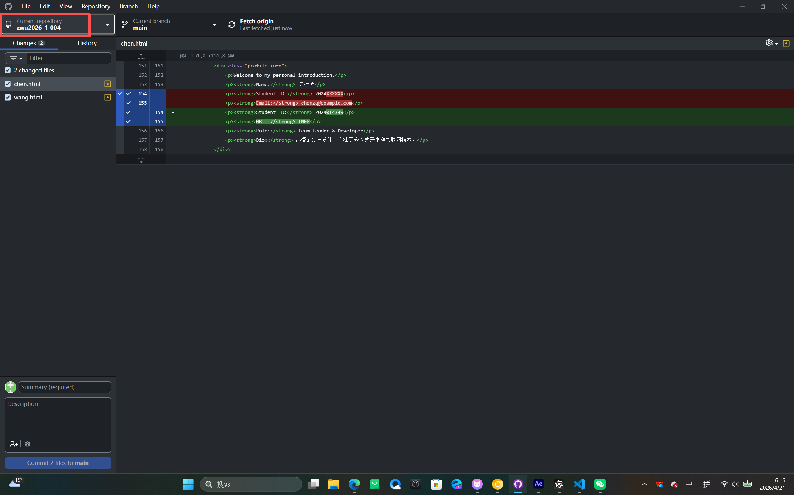
点击右上角的 Push origin 按钮上传到 GitHub。
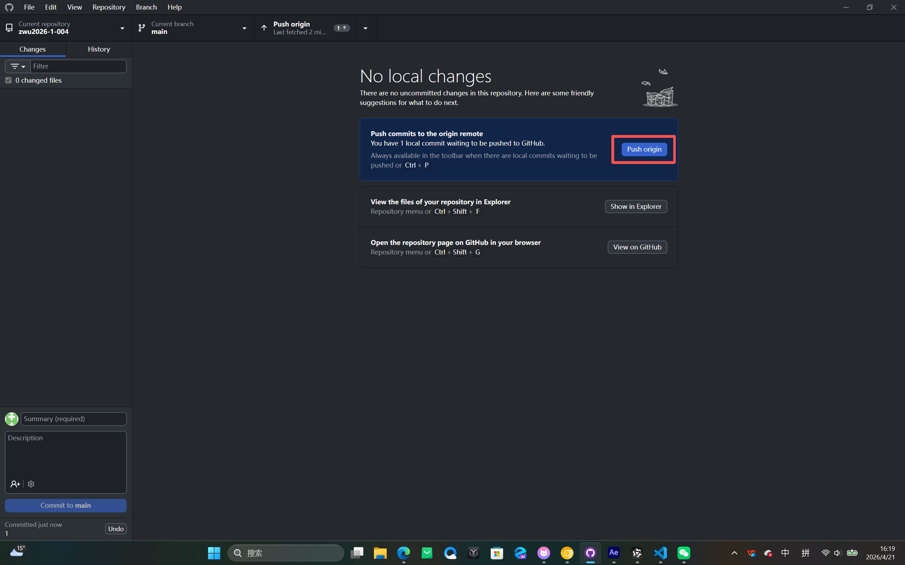
推送到 GitHub 后,我们整理了项目目录结构以提高可维护性。我们为文档、图片、视频和其他资源创建了专用文件夹,使项目更易于导航和管理。
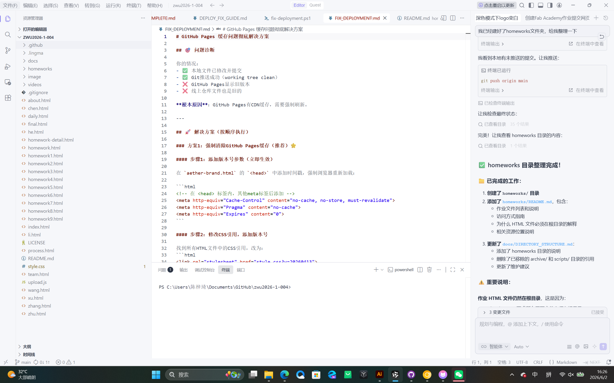